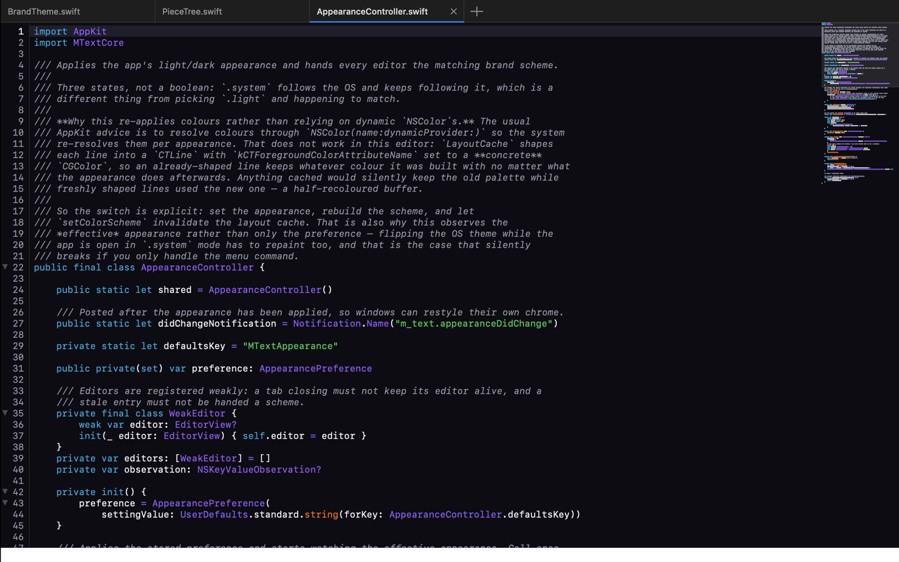
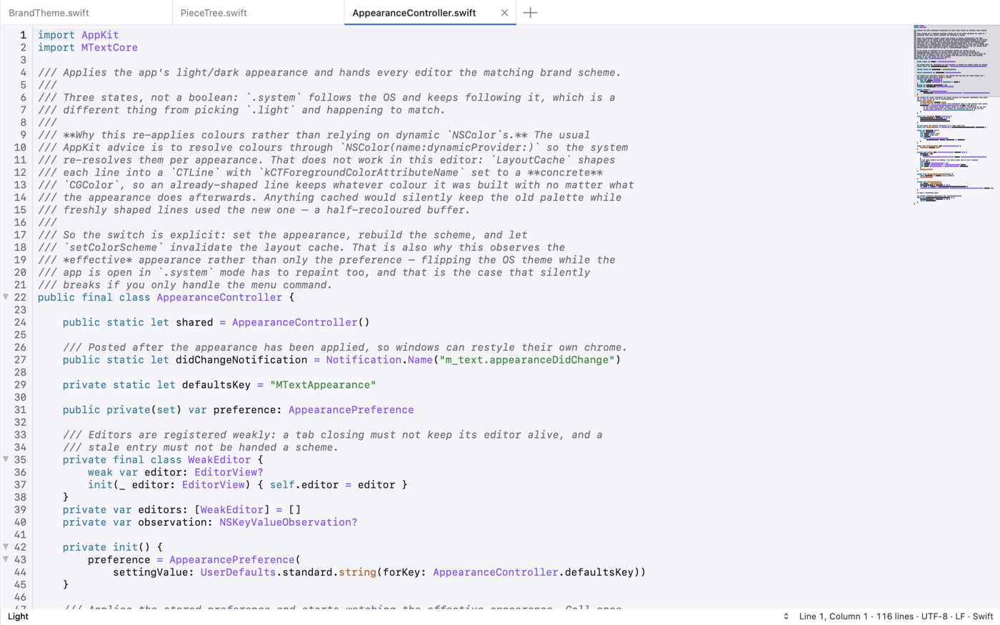
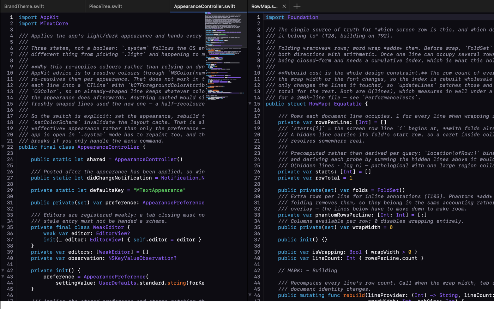

A native text editor,
built from scratch
Sublime Text-class editing for macOS in pure Swift and AppKit. No Electron, no web view, no third-party dependencies — the text rendering, the rope, the syntax engine and the fuzzy matcher are all in the repo.


Real screenshots, captured from the running app — try the appearance switch above.
What it does
Everything you reach for, none of the weight
Phases 1–7 are complete: the editing core, syntax highlighting, find and replace across a project, panes, sessions, build systems and more.
Multi-caret editing
⌘D to add the next occurrence, column selection, split selection into lines — every command operates on every caret at once.
TextMate grammars
A real oniguruma-style regex engine with scope selectors, so `.tmLanguage` and `.sublime-syntax` files highlight the way you expect.
Goto Anything
⌘P for files, `@` for symbols, `:` for lines, `#` for text — the same fuzzy matcher ranks all of them.
Split panes & tabs
Two-pane splits with per-pane tabs, and a find bar that opens in the pane you are actually working in.
Find in files
Project-wide search streams into a results buffer; replace previews every change and refuses any file that moved since planning.
Hot exit
Quit without prompts. Windows, panes, tabs, carets, scroll positions and unsaved buffers all come back.
Command palette
Every command, one keystroke away
⌘⇧P lists all 117 commands, fuzzy-ranked as you type. ⌘P does the same for files. Try typing in the palette — it filters live.
Two panes, one window
Split the view, keep the context
Each pane keeps its own tabs and its own find bar — searching on the left never jumps you to the right.

Under the hood
Built like it has to last
A rope-backed piece tree for storage, a generation counter driving every cache, and a hand-rolled test harness — because XCTest ships inside Xcode and this builds with Command Line Tools alone.
Install
Download it, or build it yourself
A native macOS text editor in pure Swift and AppKit — no Electron, no web view, no
third-party dependencies. Download
m_text-1.0.4.dmg,
open it, and drag m_text to Applications. Universal: Apple Silicon and Intel.
⚠️ First launch
This build is ad-hoc signed only — not signed with a Developer ID and not notarised. Both need a paid Apple Developer account. Gatekeeper will therefore refuse it the first time you open it, with one of:
“Apple could not verify m_text.app is free of malware that may harm your Mac
or compromise your privacy.” (macOS 15 and later)
“m_text cannot be opened because the developer cannot be verified.”
(macOS 14 and earlier)
On macOS 15 (Sequoia) and later, right-click ▸ Open no longer works for this — Apple removed that route. Try to open the app once, then go to System Settings ▸ Privacy & Security, scroll to Security, and click Open Anyway. On macOS 14 and earlier, right-click ▸ Open ▸ Open still does it.
Either way, one terminal command clears it for good — and it is what you want if you
launch with mtext, since a blocked app fails the same way from the shell:
$ xattr -dr com.apple.quarantine /Applications/m_text.app
See DISTRIBUTION.md for what proper signing and notarisation would involve.
⌨️ The mtext command
Open folders from the shell the way code . does. Install it from inside
the app — Help ▸ Install “mtext” Shell Command… — no terminal and no
admin rights needed. It installs to ~/.local/bin and offers to add that
to your shell profile if it is not already on your PATH.
$ mtext . # open the current folder $ mtext ~/src ~/docs # several folders in one window $ mtext notes.txt # a file, created if it does not exist
It points at the copy of m_text you installed it from, and falls back to finding the app by bundle identifier if you move it later.
Building from source needs only the Command Line Tools — there is no Xcode project, and
nothing is fetched from the network. make install-cli installs the same
command from a checkout.
$ git clone https://github.com/tai-le-meso/m_text.git $ cd m_text $ make # builds build/m_text.app $ make run # build and launch $ make test # 433 tests, no XCTest $ make dmg # a distributable disk image
Releases
Current release
Releases are cut from a git tag: pushing v1.0.4 makes CI run the tests,
build a universal DMG, verify it mounts, and publish it. The tag is the only place the
version lives, so a published build cannot disagree with the tag it came from.
Fixes a crash that quit the app whenever you opened Settings.
- Opening Settings (⌘,) killed the app — in every release up to 1.0.3. It was a deadlock in the settings file-watcher, triggered by Settings writing into the directory it was watching
- Carries everything from 1.0.3: opt-in update checking via m_text ▸ Check for Updates…, off by default
Previously —
v1.0.3:
opt-in update checking;
v1.0.2:
drag folders, Open Recent and the mtext command;
v1.0.1:
several folders in one window;
v1.0.0:
first release. Full history in
CHANGELOG.md.
Verify a download against its published checksum — both files sit side by side on the release page:
$ shasum -a 256 -c m_text-1.0.4.dmg.sha256 m_text-1.0.4.dmg: OK
More detail, if you need it: DISTRIBUTION.md (signing, notarisation, how the release workflow is put together), KNOWLEDGE.md (every bug solved here, symptom-first) and HANDOFF.md (where the project stands).